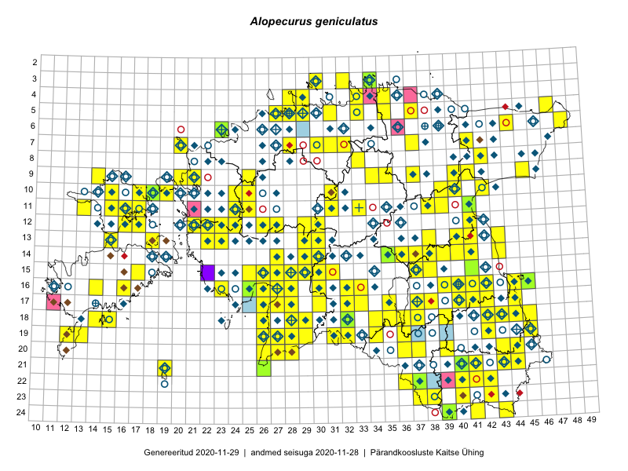

Alopecurus geniculatus
Uuendatud: 2016-12-01
Kaardile koondatud taksonid: Alopecurus geniculatus L.

Kaart põhineb 163 kirjel, neist vaatlusi 162 ja eksemplare 1.
Kuvatud viited 20 esimesele andmebaasikirjele, ülejäänud PlutoFis
- Malle Leht: 2015-07-09: : ala
- Peedu Saar, Liina Oja: 2015-05-21: 16-25: ala
- Peedu Saar, Toomas Kukk: 2015-05-28: 11-17: ala
- Toomas Kukk, Eerik Leibak: 2015-08-10: 13-15: ala
- Tiit Hallikma, Indrek Tammekänd, Toomas Kukk: 2015-06-09: 12-29: ala
- Rein Kalamees, Kersti Püssa: 2015-09-06: 03-32: ala
- Peedu Saar, Ott Luuk: 2015-06-21: 14-41: ala
- Peedu Saar: 2015-07-04: 18-44: ala
- Peedu Saar: 2015-07-14: 15-38: ala
- Peedu Saar, Liina Oja: 2015-06-09: 17-27: ala
- Peedu Saar, Liina Oja: 2015-06-09: 17-28: ala
- Peedu Saar, Liina Oja: 2015-06-10: 14-30: ala
- Peedu Saar, Liina Oja: 2015-06-11: 15-29: ala
- Peedu Saar, Liina Oja: 2015-07-21: 06-44: ala
- Ott Luuk, Toivo Sepp: 2015-07-12: 10-31: ala
- Tiit Hallikma, Toomas Kukk: 2015-06-10: 15-30: ala
- Peedu Saar, Liina Oja: 2015-07-24: 09-45: ala
- Peedu Saar: 2015-08-10: 13-40: ala
- Peedu Saar: 2015-08-11: 13-41: ala
- Toomas Kukk: 2014-06-18: 18-15: ala